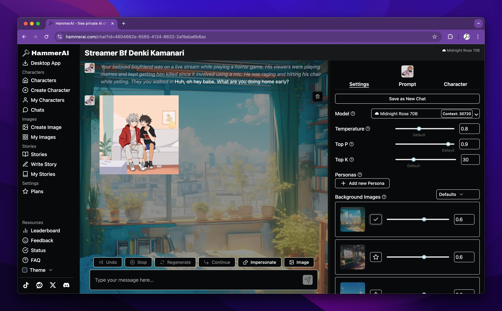

HammerAI 桌面版从零上手：5 步跑通本地大模型聊天
这是一份给刚装 HammerAI 的新人准备的实战教程。跟着做，你能在半小时内完成模型下载、界面配置和第一次有质量的角色对话。
这篇教程结束时，你能做到三件事：确认自己的机器能跑多大的模型、完成桌面版安装与首次模型下载、用聊天界面完成一次有角色设定的对话并保存到本地。
准备：先搞清楚你的机器吃不吃得下
动手下载之前花 5 分钟看一眼硬件条件——这一步能省掉后面"为什么这么卡""为什么跑不起来"的疑问。HammerAI 的硬性规则只有一条：模型必须完整装进内存或显存才能运行，看的是空闲量不是总量。
按官方给的经验公式：模型文件 6GB，就至少留出 6GB 空闲内存或显存，再给生成开销留 10% 到 50% 的缓冲。给你一张压缩版的对号表快速定位：
| 你的硬件 | 推荐起步模型 | 能跑到什么程度 |
|---|---|---|
| RTX 3050 / 2060 SUPER（8GB） | 3B Q4 | 日常对话足够 |
| RTX 3060 / 4070（12GB） | 7B Q4 到 13B Q4 | 能玩中等规模的角色 |
| RTX 3090 / 4080（16~24GB） | 13B Q8 到 30B Q4 | 基本什么都能试 |
| 纯核显或 CPU | 7B Q4 起步 | 速度会慢，但能跑 |
机械硬盘用户注意：内存吃紧时系统会把数据挪到页面文件，HDD 的慢速读写会直接拖垮体验。换 SSD 或 M.2 不能替代足够的内存，但能让你在临界状态下不至于卡成幻灯片。
不想算就用试水法——从小到大逐级开跑，卡了就退，后面会讲。
第一步：下载并安装桌面版
HammerAI 有桌面版、网页版和移动端三个入口，去HammerAI官网可以看到三个版本的完整介绍。如果你想跑本地模型（这是它区别于其他聊天产品的核心优势），直接下桌面版最省事。
打开官方下载页面，根据你的系统选对应的安装包（Windows / macOS / Linux 都有）。安装过程很干净，一路默认即可——它不会强制你注册账号。
装好之后先别急着打开，记住一个关键认知：HammerAI 本地功能完全免注册。账号只在三种情况才值得碰：想用云端模型、想跨设备同步聊天记录、想购买积分或订阅。纯本地聊天全程不需要邮箱、不需要手机号。
第二步：下载你的第一个模型
安装完成首次启动，应用会引导你下载第一个模型。这里给你一个新人最稳的路线：从小模型起步。
推荐顺序是 2.7B Q2 → 7B Q4 → 13B Q4，逐级加大。如果你按前面的对号表已经清楚自己的硬件极限，可以直接跳到对应档位。下载过程中应用会显示进度条，模型文件比较大（7B Q4 大约 4~8GB），取决于你的网速。
下载完的模型存在本地，不联网也能用——这正是 HammerAI 强调的"私密"所在。想验证的话，断网再聊一次，对话照常进行就说明数据确实没出门。
第三步：认识聊天界面的三段式布局
模型就绪后进入主界面。聊天窗口是三段式结构，花两分钟认清楚每个区域的分工：

左栏是功能导航：创建新聊天、管理角色库、浏览公共角色、模型管理入口都在这边。
中间消息区是主战场：消息气泡区分角色发言和你的发言，输入框上方有一排核心操作按钮——Undo、Stop、Regenerate、Continue、Impersonate、Image。这排按钮用得勤，尤其是 Stop（觉得回复跑偏了立刻掐断）和 Regenerate（上一条不满意重跑）。
右侧面板有三个标签：
- Settings：模型选择、采样参数滑条、用户人设、背景图管理——这是调教输出的主控台，具体参数怎么拧可以去HammerAI文档翻一下
- Prompt：显示实际发给模型的完整内容，排查"角色为什么失忆"必看
- Character：当前角色的档案与设定，聊天中随时可以回看
右栏顶部还有一个保存模式开关（自动 / 手动），关掉自动保存的话，关掉窗口聊天即清空——想要"阅后即焚"效果就切到手动模式。
第四步：用快捷键提速，别在菜单里绕
HammerAI 有一个非常实用的命令面板，按 Ctrl + K（macOS 是 Cmd + K）就能唤起。它能做两件事：全局跳转页面、触发常用聊天动作。不想记菜单层级的话，记住这一个组合键就行。
所有快捷键都可以在设置里自定义。桌面版还额外支持 Ctrl + 左右方向键在页面间前进后退，相当于浏览器的导航。
第五步：角色失忆了？打开 Prompt 标签页看看
新人最常遇到的问题就是"角色怎么把我告诉它的事忘了"。别瞎猜，打开右栏的 Prompt 标签页。
这个页面会把实际发送给模型的完整内容摊开给你看，并且标注哪些消息真的进入了上下文窗口、哪些因为超出长度被裁掉了。"失忆"的真相大多是早期消息被滚出了窗口——不是角色忘了，是模型根本没收到。
几种常见现象对应解法：
| 现象 | 在 Prompt 标签页里会看到 | 怎么修 |
|---|---|---|
| 长对话后忘事 | 早期消息被裁 | 调大上下文长度 |
| 性格变淡、回复跑偏 | 性格描述占比太小 | 精简闲聊内容，或重写角色的性格设定 |
| 回复太啰嗦 | 系统提示被塞满 | 清理不必要的角色卡字段 |
| 世界书条目没生效 | 对应条目没被注入 | 检查触发关键词是否真的出现在近期聊天里 |
理解了上下文裁剪的机制，再回去看聊天保存模式和群聊的内存压力就都有解释了。
三个新手最容易翻车的卡点
卡点一：下了个大模型跑不动。退不是丢人的事——回到模型管理，先换小一档的试。7B Q4 是绝大多数人的安全起步点，能跑再往上加。
卡点二：角色聊到一半性格变了。先看 Prompt 标签页，性格栏的内容是不是被后来的闲聊挤掉了。如果是，考虑开一个新聊天重进角色，或者精简一下角色设定里的冗余字段。
卡点三：想跨设备同步但发现记录没了。本地聊天默认只存在当前设备上，不自动上传。想同步的话需要主动登录账号并开启云同步——这是可选功能，不开就是纯本地、纯私密。
往下还能玩什么
跑通本地模型只是起点。HammerAI 的角色市场里有大量公开角色可以直接导入，你也可以用角色创建工具自己写性格设定和世界书条目。等你对采样参数有感觉了，Temperature、Repetition Penalty 这些滑条能调出完全不同的回复风格。这份教程参考的硬件对照表和角色设定模板我同步维护在GitHub、Gitee和GitCode，主库在 GitHub，国内访问选 Gitee 或 GitCode 都行。